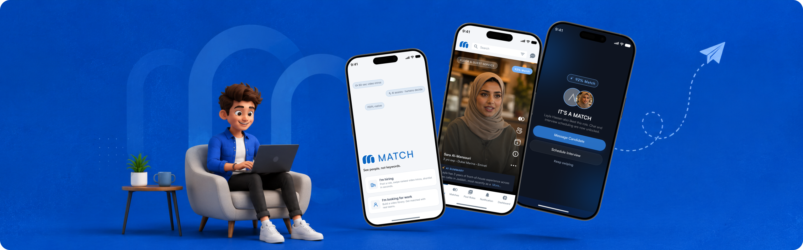
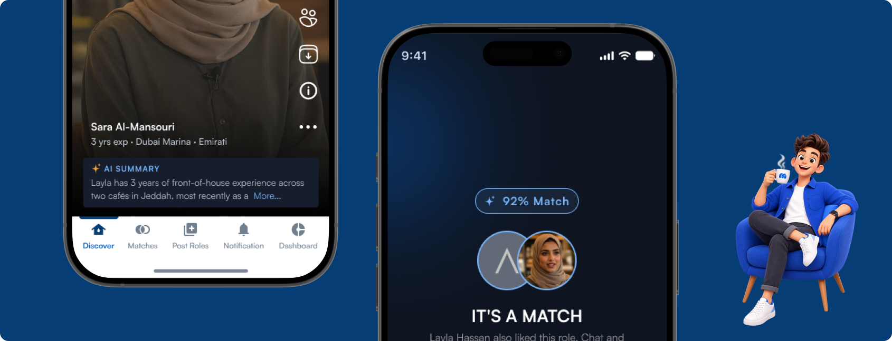
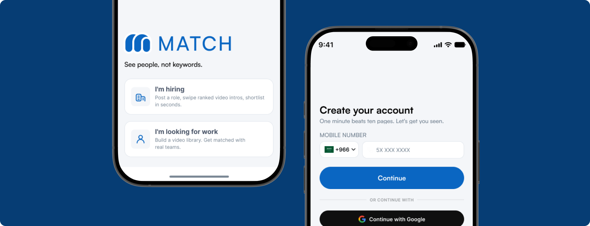
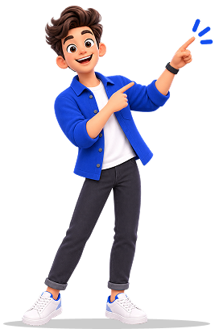
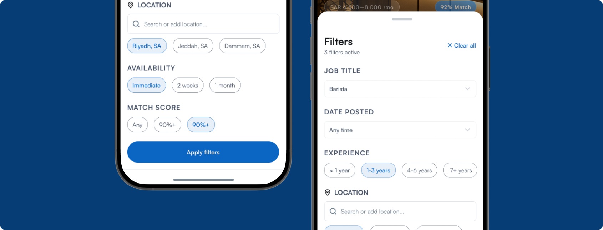
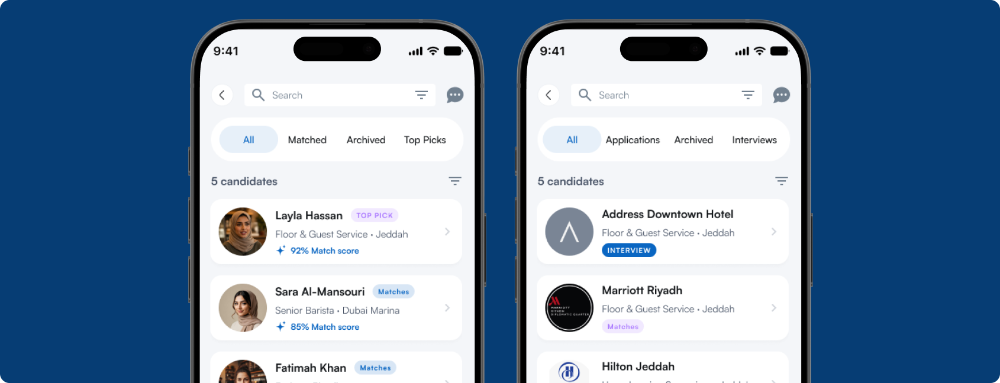
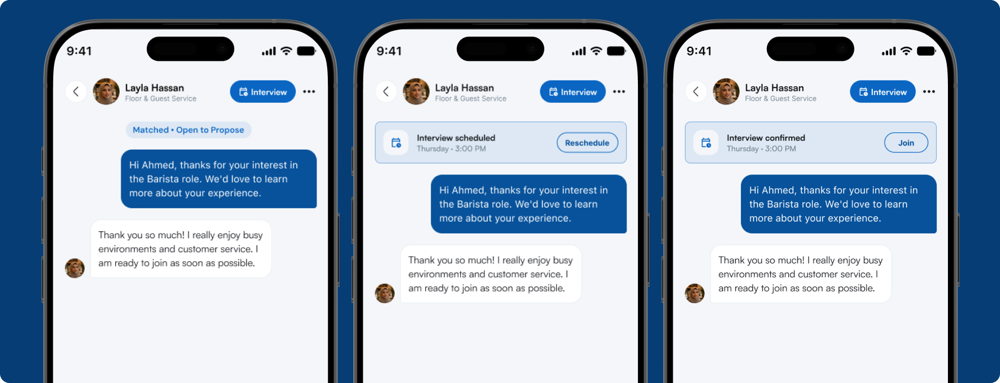
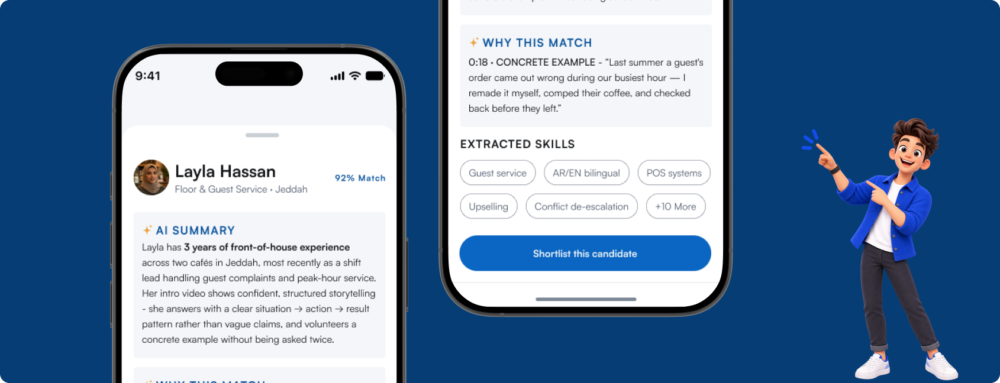
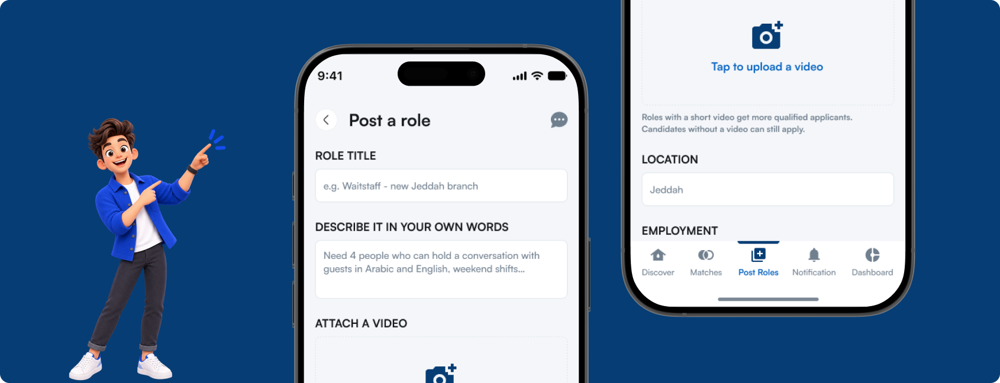
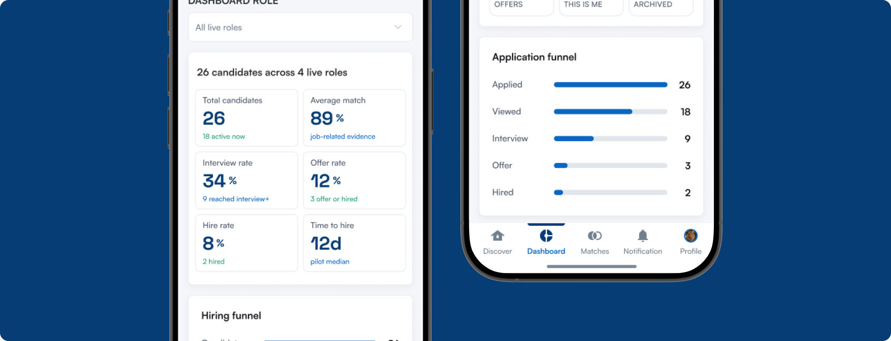

Match
Hiring, redesigned around the way people already swipe, watch, and decide. A two-sided app that replaces the resume pile with a 60 second video, an honest match score, and an AI that reads evidence out loud instead of guessing at personality - built first for Saudi Arabia and the UAE.

In a nutshell
Match is a mobile hiring app with two front doors and one shared idea: a hiring decision is easier to make well when you can actually see and hear the person on the other side of it. Employers post a role and swipe through ranked video introductions; candidates record one intro and swipe through matching roles. Interest has to be mutual before either side can message the other - and the AI never scores personality or "culture fit," only job related evidence.

The old way is breaking, quietly
A single frontline posting can pull in hundreds of near-identical applicants within days. A recruiter with a stack like that doesn't read carefully - they skim, and skimming rewards keywords over substance. The numbers told the story before we dug into it:
applicants per posting, within days
experience claims, until an expensive interview
feedback most declined candidates ever get
Same borrowed phrasing across applicants - no real signal on ability.
Claims go untested until a human spends 30 minutes finding out they're false.
Strong candidates who write a weak CV get filtered out first.
Candidates hear nothing back not even a "no."
Launching in Saudi Arabia and the UAE first shaped decisions all the way down to what the AI is and isn't allowed to say about a person.
Take the mechanics that already made Instagram, Tinder, and LinkedIn effortless, and re-point them at a decision that actually matters - a job.
Show the person, not the keyword
AI narrows, humans decide
A match is a gate, not a funnel
Evidence over adjectives
Compliant by default, not by clean-up
A walk through the product in the order a real hire moves through it - mirrored on both sides of the swipe.
Two doors, one app
The first screen states the promise - "See people, not keywords" - and three trust signals up front: 60-second video, AI-assisted, PDPL-native. Then it splits into "I'm hiring" and "I'm looking for work."

Discover: the feed does the reading
Every card leads with three things in the same order - the visual, a match percentage, and an AI summary strip - mirrored identically on both sides of the swipe.

Narrowing the field, on purpose
Same bottom-sheet component, different vocabulary - employers filter by role, experience, location, availability, and match score; candidates filter by job title, date posted, experience, and location.

It takes two
A right-swipe from either side does nothing visible until the other side also says yes. When both sides agree, a full-screen moment stops everything before either party can proceed.

From match to meeting
Interview scheduling lives inside the same conversation. Its state - scheduled, confirmed, ready to join - sits pinned above the messages, never buried in a menu.

Reading between the lines
"Why This Match" names the exact timestamp in the video and quotes what the candidate said - a recruiter evaluates a real sentence, not a confidence score taken on faith.

Posting with intent
Directly above the publish button sits the line this product is built around: "Human decision only. Match structures job-related evidence. It never scores personality, emotion, or culture fit."

Two dashboards, two jobs to be done
Same visual language - stat tiles, a funnel, a "here's what needs attention" module - but the content diverges: management tool for the employer, confidence tool for the candidate.

What Changed
Match is pre-launch, so the honest way to talk about impact is what the design is engineered to move. Early walkthroughs with hospitality recruiters have been directionally encouraging: "human decision only" reads as a relief rather than a limitation, and video-first profiles resonate with candidates who feel invisible behind a CV.
to a defensible shortlist
for strong, CV-shy candidates
exposure, via video over paragraphs
on both sides, from the match gate
What stuck with me
The hardest design decision on this project was never a screen. It was how much power to hand the AI, and I kept landing on: less than it wanted. It's tempting to let an AI product score a personality or predict "culture fit." None of that would survive contact with a recruiter who's been burned by a fabricated resume.
Designing both sides of the same interaction in parallel - rather than one primary user with an "also works for" afterthought - changed how I think about two-sided products generally.